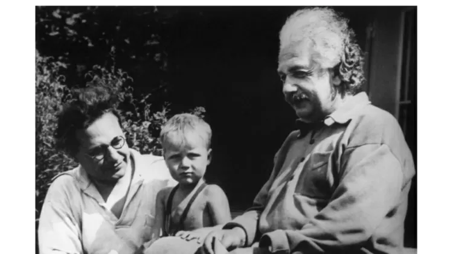

Sobre Albert Eisten
Albert Einstein foi um marcante cientista alemão, com trabalhos principalmente nas áreas de física (física moderna e mecânica quântica) e química. Devido à sua relevante contribuição para o mundo acadêmico, ganhou o maior e mais cobiçado prêmio que um cientista pode receber, o Prêmio Nobel de Física no ano de 1921.
No campo da Física, Einstein seguramente foi o maior cientista, principalmente devido às suas várias descobertas nas áreas da física moderna e mecânica quântica.
Descobertas de Albert Eisten:
- ★Movimento browniano, 1905
- ★Efeito fotoelétrico, 1905
- ★Teoria especial da relatividade, 1905
- ★Teoria geral da relatividade, 1916
- ★Investigações sobre a teoria do movimento browniano, 1926
Nascimento de Albert Einsten
Nascido em 14 de março de 1879 na cidade de Ulm, localizada no estado federal alemão chamado Baden-Württemberg, Albert era de origem judia. Entretanto, um ano após seu nascimento sua família mudou-se para Munique, no sul da Alemanha, onde ele passou toda a sua infância e grande parte da adolescência.
Local Nascimento
Seus Pais
Sua mãe se chamava Pauline Einstein e era dona de casa, já seu pai, Hermann Einstein, era engenheiro eletricista. Cabe destacar que o pai de Einstein foi o grande responsável por influenciar sua carreira profissional, impulsionando Albert a dar seus primeiros passos no campo da física.
Adolescência
Aos quinze anos Einstein abandona o Gymnasium e parte para Milão, onde vivem seus pais. Um ano depois seu pai comunica que não pode mais lhe dar dinheiro, pois a fábrica estava, mais uma vez, à beira da falência. "É preciso que você arranje uma profissão qualquer, o mais rápido possível" (Levy, p.24), sentencia o senhor Hermann Einstein. Foi então que Albert decidiu fazer física, mas, não possuindo o diploma do Gymnasium, ele não podia entrar na universidade. Como alternativa ele poderia freqüentar um instituto técnico, e Einstein escolhe simplesmente o mais renomado da Europa central, a Escola Politécnica Federal (Eidgenössische Technische Hochschule), a ainda hoje famosa ETH, em Zurique (Suiça). Na primeira tentativa de ingresso ele é reprovado nas provas de botânica, zoologia e línguas modernas, mas seu excelente resultado em física chamou a atenção do diretor da escola, que lhe aconselha a freqüentar uma escola cantonal em Aarau, próxima a Zurique, a fim de obter o diploma dos estudos secundários, com o qual adquiriria o direito de freqüentar a ETH, ou a universidade. Em 1895, aos dezesseis anos, Einstein estava mais do que feliz no ambiente livre e motivador da escola cantonal, e se preocupava com um problema que nem ele, nem seu professor sabiam resolver: queria saber qual o aspecto que teria uma onda luminosa para alguém que a observasse viajando com a mesma velocidade que ela!! Este problema voltaria tempos depois, quando Einstein formulou sua teoria da relatividade.Em 1896 recebeu o diploma da escola secundária e, aos 17 anos, renunciou à cidadania alemã, ficando sem pátria por alguns anos. A cidadania suíça lhe foi concedida em 1901. Cursou o ensino superior na ETH em Zurique, onde mais tarde foi docente.
Fase Adulta

A 6 de janeiro de 1903 casou-se com Mileva Maric. Tiveram três filhos: Lieserl, Hans Albert e Eduard. A primeira morreu ainda bebê, o mais velho tornou-se professor de hidráulica na Universidade da Califórnia e o mais jovem, formado em música e literatura, morreu num hospital psiquiátrico suíço. Entre 1909 e 1913 Einstein lecionou em Berna, Zurique e Praga. Voltou à Alemanha em 1914, pouco antes do início da Primeira Guerra Mundial. Aceitou um cargo de pesquisa na Academia Prussiana de Ciências junto com uma cadeira na Universidade de Berlim. Também assumiu a direção do Instituto Wilhelm de Física em Berlim. Em novembro de 1915, Einstein fez uma série de conferências e apresentou sua teoria da relatividade geral. No ano seguinte o cientista publicou "Fundamento Geral da Teoria da Relatividade". Em 1919, separou-se da esposa Mileva e se casou com a prima Elsa. Naquele ano tornou-se conhecido em todo o mundo, depois que sua teoria foi comprovada em experiência realizada durante um eclipse solar. Einstein ganhou o Prêmio Nobel de Física de 1921 e foi indicado para integrar a Organização de Cooperação Intelectual da Liga das Nações. No mesmo ano, publicou "Sobre a Teoria da Relatividade Especial e Geral".  Ao longo da vida, Einstein visitaria diversos países, incluindo o Brasil, em 1925. Entre 1925 e 1928, Einstein foi presidente da Universidade Hebraica de Jerusalém. Em 1933, Hitler chegou ao poder na Alemanha e o cientista foi aconselhado por amigos a deixar o país, renunciando mais uma vez à cidadania alemã. Em 7 de outubro de 1933, Einstein partiu para os Estados Unidos, onde passou a integrar o Instituto de Estudos Avançados da Universidade de Princeton. Em 1940 ganhou a cidadania americana, mantendo também a cidadania suíça. Em 1941 teve início o Projeto Manhattan, que visava o desenvolvimento da bomba atômica pelos americanos. Einstein não teve participação no projeto. Em 1945, renunciou ao cargo de diretor do Instituto de Estudos Avançados da Universidade de Princeton, mas continuou a trabalhar naquela instituição. A intensaatividade intelectual de Einstein resultou na publicação de grande número de trabalhos, entre os quais "Por Que a Guerra?" (1933), em colaboração com Sigmund Freud; "O Mundo como Eu o Vejo" (1949); e "Meus Últimos Anos" (1950). A principal característica de sua obra foi uma síntese do conhecimento sobre o mundo físico, que acabou por levar a uma compreensão mais abrangente e profunda do universo. Em 1952, Ben-Gurion, então primeiro-ministro de Israel, convidou Albert Einstein para assumir o cargo de presidente do Estado de Israel. Doente, Einstein recusou. Uma semana antes de sua morte assinou sua última carta, endereçada a Bertrand Russell, concordando em que o seu nome fosse incluído numa petição exortando todas as nações a abandonar as armas nucleares. Contribuindo para a física no século 20 no âmbito das duas teorias que constituíram seus traços mais peculiares - a dos quanta e da relatividade -, Einstein deu à primeira o elemento essencial de sua concepção do fóton, indispensável para que mais tarde se fundissem, na mecânica ondulatória de Louis de Broglie, a mecânica e o eletromagnetismo. E deu à segunda sua significação completa e universal, que se extrapola dos campos da ciência pura e atinge as múltiplas facetas do conhecimento humano. Saliente-se também que algumas das descobertas de Einstein - como a noção de equivalência entre massa e energia e a do continuum quadridimensional, suscitaram interpretações filosóficas de variadas tendências.
Einstein morreu em 18 de abril de 1955 na cidade de Princeton, no estado de Nova Jersey, nos Estados Unidos, vítima de um grave aneurisma.
Dois fatos curiosos marcaram a morte deste cientista. O primeiro foi que ele se recusou a passar por cirurgia (para tentar amenizar o aneurisma), alegando que não queria prolongar o seu tempo de vida na Terra, e segundo suas próprias palavras desejaria “morrer com elegância“.
Outro fato curioso é que Albert pediu para os seus familiares não seguirem as tradições judias após sua morte, tendo o seu corpo sido cremado — e não enterrado, como de costume entre os judeus. Este último desejo de Einstein se deve ao fato de que ele não queria que sua lápide virasse um ponto turístico.
- ★“Sobre um ponto de vista heurístico relativo à produção e transformação da luz”, que trata sobre a absorção da luz pelo efeito fotoelétrico.
- ★“Sobre o movimento de pequenas partículas em suspensão dentro de líquidos em repouso, tal como exigido pela teoria cinética molecular do calor”, cujo objetivo é explicar que o movimento aleatório de pequenos grãos de pólen em suspensão num líquido é originado das minúsculas colisões moleculares.
- ★“Sobre a eletrodinâmica dos corpos em movimento”, trabalho que lançou as bases para uma área da Física totalmente nova: a relatividade restrita.
- ★“A inércia de um corpo depende do seu conteúdo energético?”, artigo no qual apresenta o princípio da equivalência e a famosa relação entre energia e massa de repouso: E = mc².
- ★Em razão de seu legado científico, Einstein tornou-se um dos mais famosos e influentes cientistas da humanidade. A teoria da relatividade geral, por exemplo, permitiu que criássemos o GPS (Sistema de Posicionamento Global). Como a gravidade terrestre afeta a propagação das ondas eletromagnéticas, uma série de correções é feita nos sinais de satélite, de forma que esses satélites são capazes de nos localizar rapidamente e com grande precisão.
- ★Ainda no domínio da teoria da relatividade, Einstein previu a possibilidade da existência de ondas gravitacionais, que foram detectadas em 2017, durante a colisão de dois buracos negros.
- ★No ramo da Mecânica Quântica, Einstein deixou diversas questões em aberto, que, futuramente, viriam a dar origem a uma nova área da Física, a Óptica Quântica. Os estudos de Einstein relacionados ao comportamento da luz renderam-lhe a explicação do efeito fotoelétrico, empregado nas células fotovoltaicas, capazes de produzir energia solar, bem como a luz laser.
- ★Einstein também foi capaz de estabelecer uma relação de proporcionalidade entre massa e energia por meio da sua fórmula mundialmente conhecida: E = mc². Com essa relação, o físico mostrou que a massa inercial (m) multiplicada pelo quadrado da velocidade da luz (c²) é equivalente a uma quantidade de energia E. As conclusões de Einstein sobre a energia de repouso levaram à criação da bomba atômica e também ao surgimento de usinas nucleares.